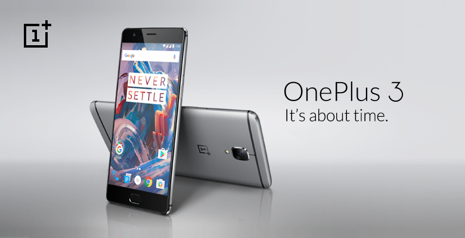
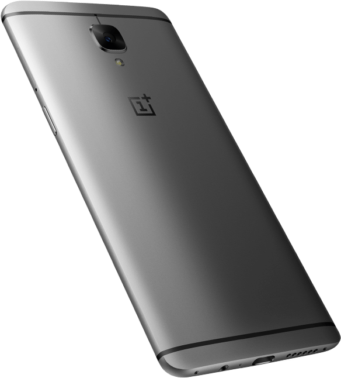
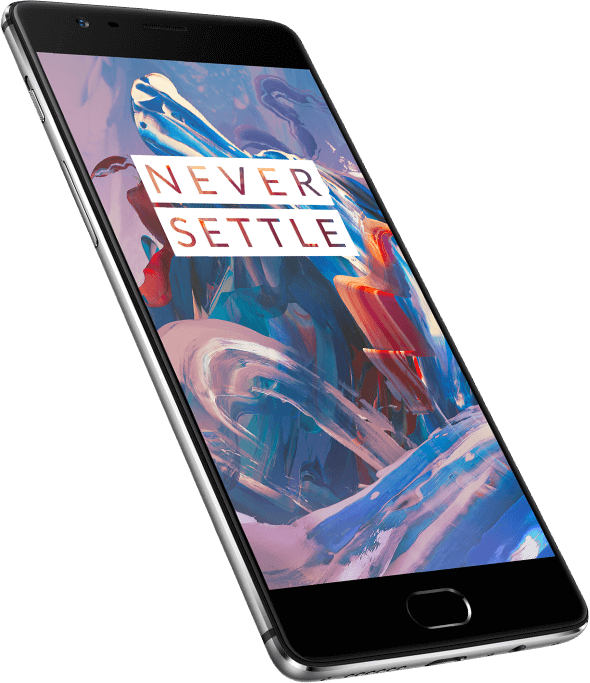
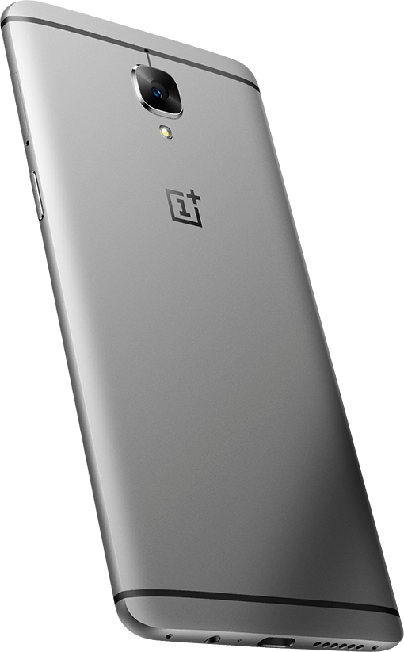
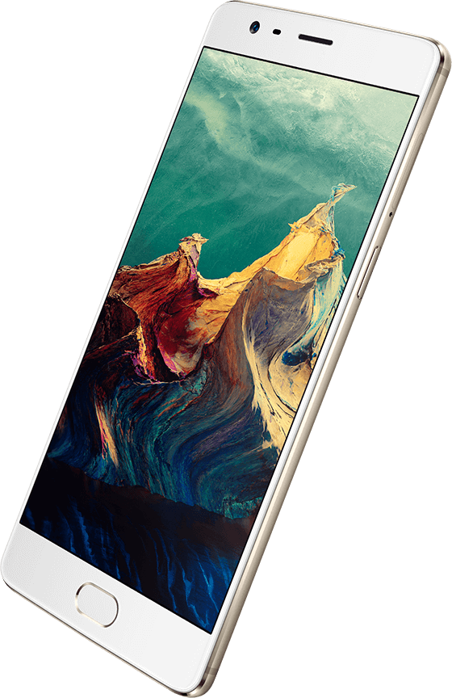
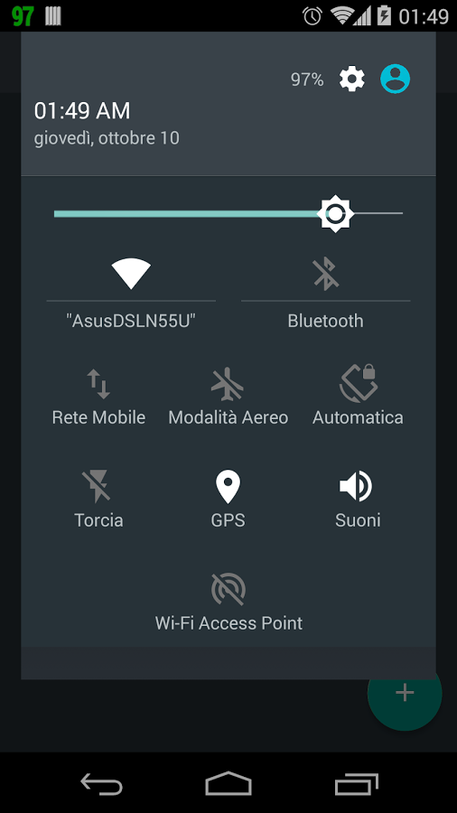
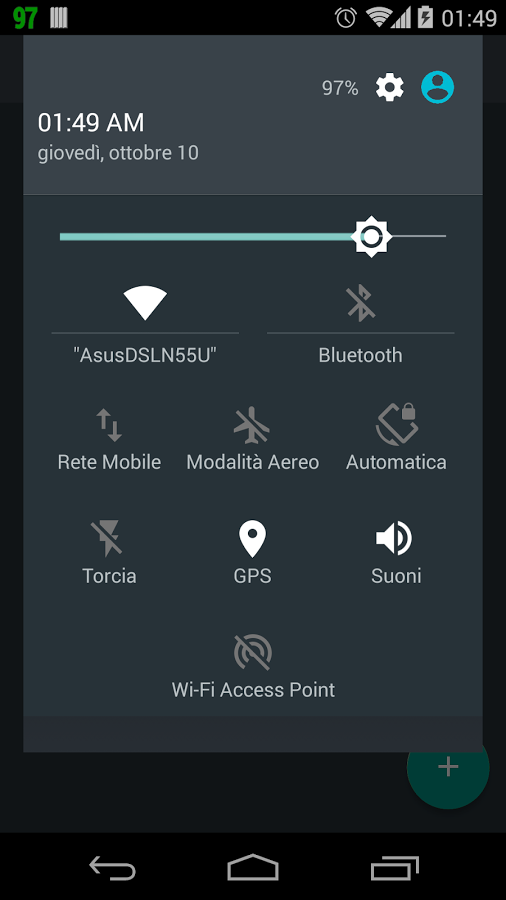

One plus 3 One plus2 Store Support
One plus 3 One plus2 Store Support
One plus 3 One plus2 Store Support
One Plus 3 Overview Design Camera Oxygen OS Specs
Design
  Never Settle
Design Philosophy
All too often, smartphones are compared by specs and features alone. In the race for more megapixels and gigabytes, design gets lost in the noise. We believe that design is more than just a sub-category. Yes, specs are important, and the OnePlus 3 is a technical powerhouse. But none of this matters if you don’t feel inspired every time you pick up your device. That’s the mindset that led to the OnePlus 3.
All-metal Build
Remarkably solid.
Surprisingly thin. 
The metal unibody of the OnePlus 3 begins with a premium space-grade aluminum alloy, selected for its notable strength, light weight, and premium feel. Rather than molding and connecting several pieces, we carve each body out of a single slab of this robust metal for a seamless, resilient build. Soft curves are balanced against sharp lines for a striking impression and comfortable grip. And at just 7.3 mm, the OnePlus 3 ranks among the thinnest flagships in the world.


 

Alert Slider
More options for more control
Our exclusive Alert Slider gives you complete control over your notifications. Toggle between three customizable settings, without ever taking your phone out of your pocket: all notifications, priority notifications, or silent. Peace and quiet is a simple slide away.
Overview
<--Previous
Camera
Next -->